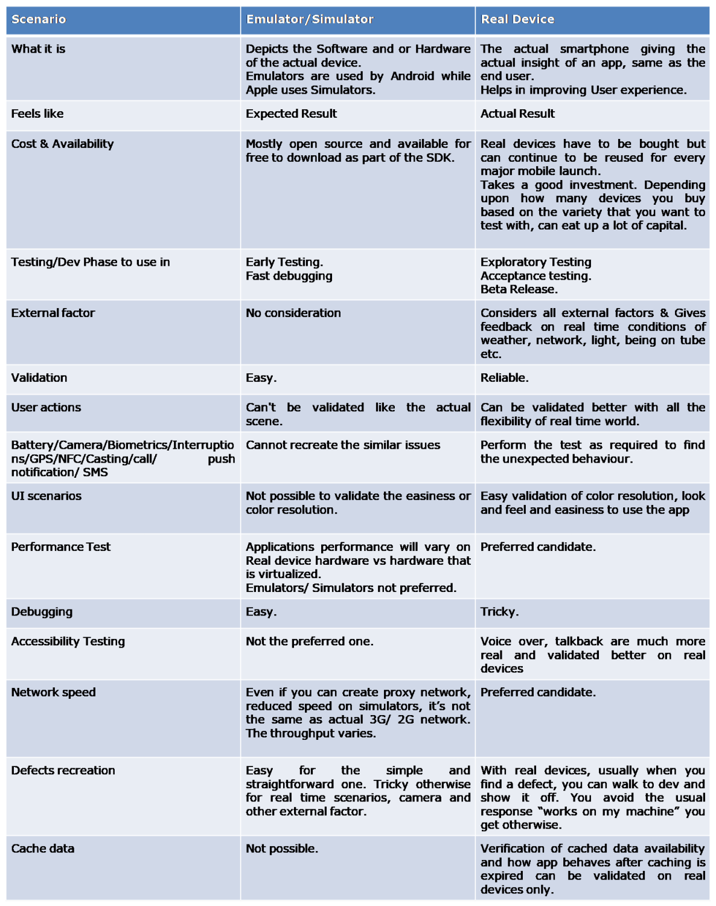

Mobile App Testing - Emulator/Simulators or Real Device
Now that everyone has a smartphone and access to many free and paid apps, users and customers expect a certain level of professional and polished behaviour on their mobile devices. They know what to expect, what their devices are capable of, and expect to be delighted in terms of user experience, stability and interactions.
With new devices getting launched every month supporting different screen sizes, different resolutions, themes, Modified OS, combinations of OS and form factors, OS version updates, new features, it gets quite difficult to provide the Quality assurance and give the sign-off.
You need to think more about the convenience of the app user and the mobile business customer.
We have multiple options on how to provide QA for Mobile app testing. We can test the apps with Emulators / Simulators, Real Devices & Cloud-based device farms.
Going with Cloud-based device farms completely depends on how complex and big is your app, how early you have to deliver and what is your customer base, team base, their locations, navigations in your app and the transactions.
Sometimes, you may not even need the cloud device farm and having the real devices at hand can assure you more Quality confidence. This is considering a few restrictions with cloud device farms, such as - the network in the cloud, possible interruptions user can have while handling the app on the device, battery drainage, and of course, you need to factor the cost of cloud-based testing by considering the market share/business value of your app.
Test Strategy :
You have to have the right balance between real devices and emulators/simulators to get accurate results at the shortest time possible considering the Agile way.
It’s not that you end up spending all your money buying real devices or that you rely on simulators to give the confidence to launch the app in the market. These are specific concerns for smaller businesses as well as for teams constrained by capital.
Looking at the new trends in mobile like Android Q, iOS 13, foldable smartphones, on-screen fingerprint, fast FaceId detection, dark themes one won’t take the risk of going with just the simulator/Emulator.
Emulators/Simulators and Real devices :
Basics: Emulators & Simulators are virtual devices whereas Real devices are actual smartphones. Emulators take into account both OS and Hardware while in Simulators just takes the Software in the account. Emulators behave like Real device in ideal condition. They don’t take into account the external factors in real-time usage.
Emulators are used by Android while Apple uses Simulators.
Real devices give you actual insight into the app.
Emulators are slow compared to simulators as they take into account both hardware and software.
Pros and cons :
Pros & Cons of Emulator/Simulator & Real Devices

What to choose and when : You have to have the right balance between real devices and simulators to get accurate results at the shortest time possible.
Cloud device farm: Functional testing. To verify number OS versions/form factors/ carriers /modified OS for android.
Real Device: QA can use ( the sooner the better) specific real devices for Sanity/acceptance testing, Exploratory testing, Performance & Accessibility testing, Beta Release. When team members see the app on an actual device, they suddenly relate to it and feel a higher emotional connect. Actual testing by QA and one can simulate the actual scenarios and conditions ( battery, ambient light conditions, signal levels, camera permissions, etc)
Emulator/Simulator testing: Dev machines. Early Testing, Fast debugging. Dev can use these at early stages for fast debugging, and QA when a new product is launched and unable to get hold of the real device.
Therefore, you’ll need a combination of all of these depending upon your needs.